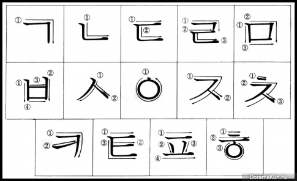

Алфавіт в корейській мові називається Хангиль(한길)
Ханги́ль (кор. 한글) — корейська фонематична абетка. Її характерною особливістю є те, що літери абетки об'єднуються у групи, які приблизно відповідають складам.
Сучасна назва «хангиль» була запроваджена Чу Сігьоном 1912 року. Вона одночасно означає «велика писемність» давньокорейською і «корейська писемність» сучасною корейською мовою.
Хангиль(한길)
1 ряд- голосні(모음); 2 ряд- подвоєнні голосні(이중 모음); 3,4 ряди- приголосні(자음);
| ㅏ (a) | ㅓ (eo) | ㅗ (o) | ㅜ (u) | ㅡ (eu) | ㅣ (i) | ㅐ (ae) | ㅔ (e) | ㅚ (oe) | ㅟ (wi) |
| ㅑ (ya) | ㅕ (yeo) | ㅛ (yo) | ㅠ (yu) | ㅐ (yae) | ㅖ (ye) | ㅘ (wa) | ㅙ (wae) | ㅝ (wo) | ㅞ (we) | ㅢ (ui) |
| ㄱ (g,k) | ㄲ (kk) | ㅋ (k) | ㄷ (d,t) | ㄸ (tt) | ㅌ (t) | ㅂ (b,p) | ㅃ (pp) | ㅍ (p) |
| ㅈ (j) | ㅉ (jj) | ㅊ (ch) | ㅅ (s) | ㅆ (ss) | ㅎ (h) | ㄴ (n) | ㅁ (m) | ㅇ (hg *в більшості не читається*) | ㄹ (r,l) |

- Всі літери в корейській мови пишуть з ліва на право та зверху вниз.
- Письмове позначення голосних Запис голосних літер складається з трьох елементів:
- Горизонтальна лінія, що символізує Землю, як квінтесенція початку інь.
- Точка, що символізує Сонце, як квінтесенція початку ян. При накресленні пензликом точка перетворюється в коротку лінію.
- Вертикальна лінія, що символізує людину, як сутність, що розташовується між Землею і Небом.
- Точки (тепер короткі лінії)було додано до цих базових елементів для того, щоб відокремити прості голосні чамо:
- Прості голосні
- Горизонтальні:
- голосні заднього і змішаного ряду.
- світле кор. ㅗ (о / у)
- темне кор. ㅜ (у)
- темне кор. ㅡ (и)
- Вертикальні:
- голосні переднього ряду.
- (кор. ㅓ (о) в процесі розвитку мови мігрував у бік заднього ряду).
- світле кор. ㅏ (а)
- темне кор. ㅓ (о / а)
- нейтральне кор. ㅣ (і)
- Складові чамо. Звуки о або у перед а або о стають коротким звуком [w].
- При утворенні складових голосних має бути присутня гармонія голосних.
- ㅘ =ㅗ+ ㅏ
- ㅝ =ㅜ + ㅓ
- ㅙ = ㅗ + ㅐ
- ㅞ =ㅜ + ㅔ
- Складові чамо, що закінчуються на кор. ㅣ (і), спочатку були дифтонгами. Проте поступово більшість з них стала чистими голосними:
- ㅐ =ㅏ +ㅣ
- ㅔ =ㅓ +ㅣ
- ㅙ =ㅘ +ㅣ
- ㅚ =ㅗ +ㅣ
- ㅞ =ㅝ +ㅣ
- ㅟ =ㅜ +ㅣ
- ㅢ =ㅡ +ㅣ